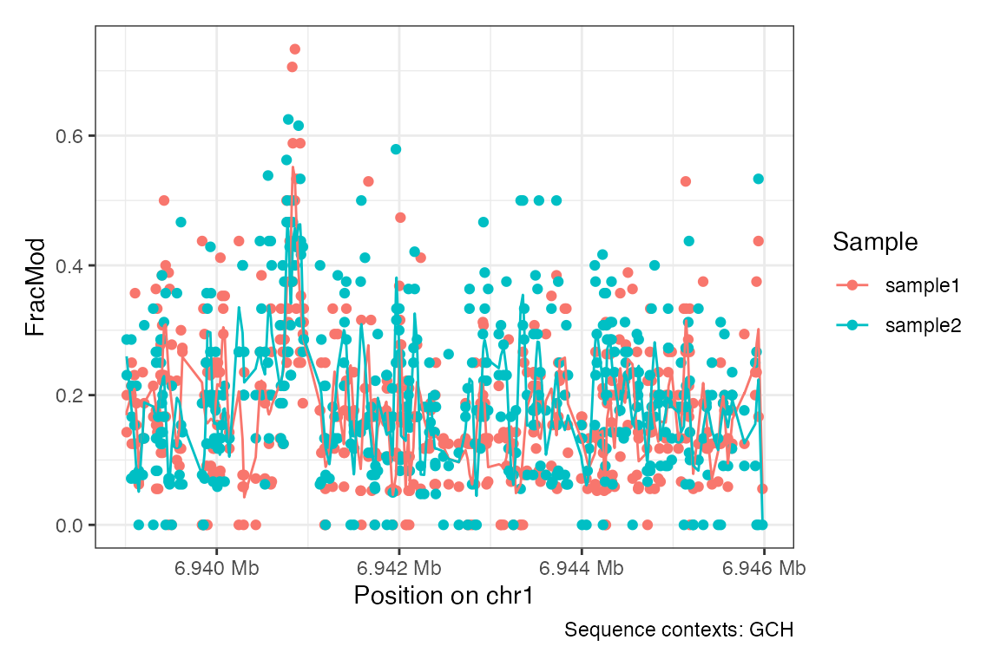
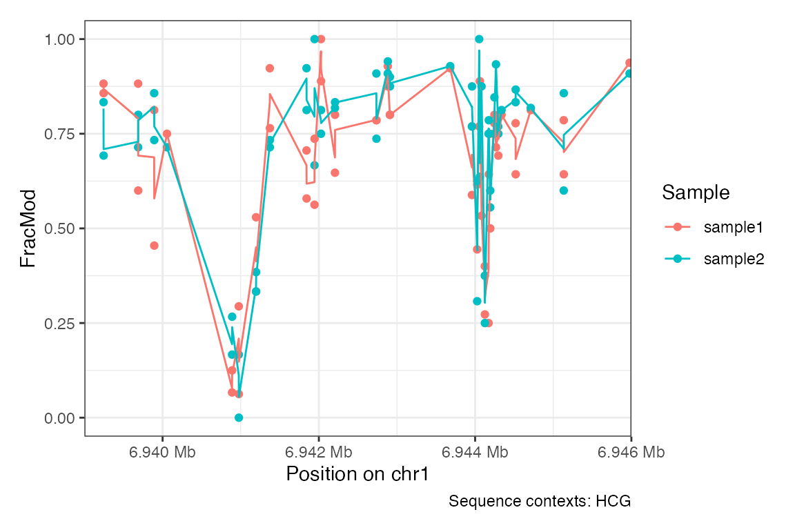
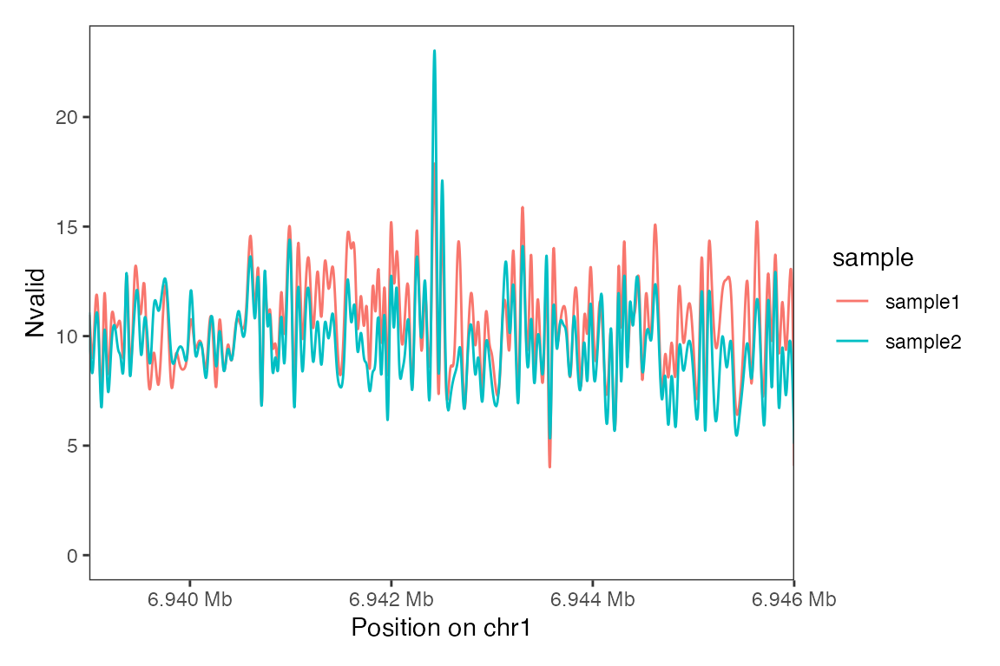

Overview
footprintR provides tools for working with
single-molecule footprinting data in R. These include functions for
reading base modifications from bam files, e.g. generated by generated
by Dorado, or files
generated by modkit,
efficient representation of such data as R objects, and functions to
manipulate and visualize such objects.
Current contributors include:
Installation
footprintR can be installed from GitHub via the
BiocManager package:
if (!requireNamespace("BiocManager", quietly = TRUE))
install.packages("BiocManager")
BiocManager::install("fmicompbio/footprintR")Functionality
Here is a minimal example for using footprintR that
illustrates its functionality using summary-level data.
We start by loading the package:
Read summary data from bed files
Here, we will demonstrate how to read and visualize summary-level
data (where individual reads have been combined per genomic position).
For an example of how to work with read-level data, see the
vignette("read-level-data").
The example is using small example data provided as part of the
package. Here we get the file names for per-position summary 5mC
modification data in bedMethyl format:
# collapsed 5mC data for a small genomic window in bedMethyl format
bedmethylfiles <- system.file("extdata",
c("modkit_pileup_1.bed.gz",
"modkit_pileup_2.bed.gz"),
package = "footprintR")
# file with sequence of the reference genome in fasta format
reffile <- system.file("extdata", "reference.fa.gz", package = "footprintR")This allows us to read the data using readBedMethyl()
(modbase = "m" indicates that we want to read 5mC
modifications, for a full list of possible modifications see the section
about base modifications in the SAM tag
specification):
names(bedmethylfiles) <- c("sample1", "sample2")
se <- readBedMethyl(bedmethylfiles,
modbase = "m",
sequenceContextWidth = 3,
sequenceReference = reffile,
BPPARAM = BiocParallel::SerialParam())
se
#> class: RangedSummarizedExperiment
#> dim: 12020 2
#> metadata(1): readLevelData
#> assays(2): Nmod Nvalid
#> rownames: NULL
#> rowData names(1): sequenceContext
#> colnames(2): sample1 sample2
#> colData names(2): sample modbaseThese bedMethyl files contain summarized data and are
read into a RangedSummarizedExperiment object. The rows
here correspond to genomic positions:
rowRanges(se)
#> UnstitchedGPos object with 12020 positions and 1 metadata column:
#> seqnames pos strand | sequenceContext
#> <Rle> <integer> <Rle> | <DNAStringSet>
#> [1] chr1 6937686 + | GCA
#> [2] chr1 6937688 + | ACT
#> [3] chr1 6937689 + | CTT
#> [4] chr1 6937691 + | TAA
#> [5] chr1 6937696 + | GCA
#> ... ... ... ... . ...
#> [12016] chr1 6957049 - | TGG
#> [12017] chr1 6957051 - | CCT
#> [12018] chr1 6957052 - | TCC
#> [12019] chr1 6957056 - | CCT
#> [12020] chr1 6957057 - | CCC
#> -------
#> seqinfo: 1 sequence from an unspecified genome; no seqlengths… and the columns correspond to the different samples (here
corresponding to the names of the two input files in
bedmethylfiles):
colnames(se)
#> [1] "sample1" "sample2"The data is stored in two matrices (assays) called Nmod
(the number of modified bases per sample and position) and
Nvalid (the number of valid total read covering that
position in each sample):
assayNames(se)
#> [1] "Nmod" "Nvalid"
head(assay(se, "Nmod"))
#> sample1 sample2
#> [1,] 1 5
#> [2,] 1 0
#> [3,] 0 0
#> [4,] 0 0
#> [5,] 3 3
#> [6,] 0 0
head(assay(se, "Nvalid"))
#> sample1 sample2
#> [1,] 16 15
#> [2,] 16 15
#> [3,] 0 1
#> [4,] 1 0
#> [5,] 16 14
#> [6,] 1 0From these, you can easily calculate the fraction of modifications:
fraction_modified <- assay(se, "Nmod") / assay(se, "Nvalid")
head(fraction_modified)
#> sample1 sample2
#> [1,] 0.0625 0.3333333
#> [2,] 0.0625 0.0000000
#> [3,] NaN 0.0000000
#> [4,] 0.0000 NaN
#> [5,] 0.1875 0.2142857
#> [6,] 0.0000 NaNPlease note that non-finite fractions result from positions that had zero coverage in a given sample.
Plot data
The plotRegion() function provides a convenient and
flexible interface for visualizing data for a specific region. Here we
visualize the accessibility using GpC methylation (sequence context
GCH), and adding a smooth line:
plotRegion(se,
region = "chr1:6939000-6946000",
tracks = list(list(trackData = "FracMod",
trackType = "PointSmooth")),
sequenceContext = "GCH")
We can also restrict the plotted sites to focus on endogenous DNA methylation (sequence context HCG):
plotRegion(se,
region = "chr1:6939000-6946000",
tracks = list(list(trackData = "FracMod",
trackType = "PointSmooth")),
sequenceContext = "HCG")
Or just plot the coverage (Nvalid) as a smooth line:
plotRegion(se,
region = "chr1:6939000-6946000",
tracks = list(list(trackData = "Nvalid",
trackType = "Smooth")))
Session info
sessioninfo::session_info()
#> ─ Session info ───────────────────────────────────────────────────────────────
#> setting value
#> version R Under development (unstable) (2025-01-22 r87618)
#> os macOS Sonoma 14.7.2
#> system aarch64, darwin20
#> ui X11
#> language en
#> collate en_US.UTF-8
#> ctype en_US.UTF-8
#> tz UTC
#> date 2025-01-23
#> pandoc 3.1.11 @ /usr/local/bin/ (via rmarkdown)
#>
#> ─ Packages ───────────────────────────────────────────────────────────────────
#> package * version date (UTC) lib source
#> abind 1.4-8 2024-09-12 [1] CRAN (R 4.5.0)
#> Biobase * 2.67.0 2024-10-29 [1] Bioconductor 3.21 (R 4.5.0)
#> BiocGenerics * 0.53.3 2024-11-14 [1] Bioconductor 3.21 (R 4.5.0)
#> BiocIO 1.17.1 2024-11-25 [1] Bioconductor 3.21 (R 4.5.0)
#> BiocParallel 1.41.0 2024-10-29 [1] Bioconductor 3.21 (R 4.5.0)
#> Biostrings 2.75.3 2024-12-15 [1] Bioconductor 3.21 (R 4.5.0)
#> bitops 1.0-9 2024-10-03 [1] CRAN (R 4.5.0)
#> BSgenome 1.75.0 2024-10-29 [1] Bioconductor 3.21 (R 4.5.0)
#> bslib 0.8.0 2024-07-29 [1] CRAN (R 4.5.0)
#> cachem 1.1.0 2024-05-16 [1] CRAN (R 4.5.0)
#> cli 3.6.3 2024-06-21 [1] CRAN (R 4.5.0)
#> codetools 0.2-20 2024-03-31 [2] CRAN (R 4.5.0)
#> colorspace 2.1-1 2024-07-26 [1] CRAN (R 4.5.0)
#> crayon 1.5.3 2024-06-20 [1] CRAN (R 4.5.0)
#> curl 6.1.0 2025-01-06 [1] CRAN (R 4.5.0)
#> data.table 1.16.4 2024-12-06 [1] CRAN (R 4.5.0)
#> DelayedArray 0.33.4 2025-01-19 [1] Bioconductor 3.21 (R 4.5.0)
#> desc 1.4.3 2023-12-10 [1] CRAN (R 4.5.0)
#> digest 0.6.37 2024-08-19 [1] CRAN (R 4.5.0)
#> dplyr 1.1.4 2023-11-17 [1] CRAN (R 4.5.0)
#> evaluate 1.0.3 2025-01-10 [1] CRAN (R 4.5.0)
#> farver 2.1.2 2024-05-13 [1] CRAN (R 4.5.0)
#> fastmap 1.2.0 2024-05-15 [1] CRAN (R 4.5.0)
#> footprintR * 0.3.0 2025-01-23 [1] Bioconductor
#> fs 1.6.5 2024-10-30 [1] CRAN (R 4.5.0)
#> generics * 0.1.3 2022-07-05 [1] CRAN (R 4.5.0)
#> GenomeInfoDb * 1.43.2 2024-11-27 [1] Bioconductor 3.21 (R 4.5.0)
#> GenomeInfoDbData 1.2.13 2024-11-15 [1] Bioconductor
#> GenomicAlignments 1.43.0 2024-10-29 [1] Bioconductor 3.21 (R 4.5.0)
#> GenomicRanges * 1.59.1 2024-11-15 [1] Bioconductor 3.21 (R 4.5.0)
#> ggforce 0.4.2 2024-02-19 [1] CRAN (R 4.5.0)
#> ggplot2 3.5.1 2024-04-23 [1] CRAN (R 4.5.0)
#> glue 1.8.0 2024-09-30 [1] CRAN (R 4.5.0)
#> gtable 0.3.6 2024-10-25 [1] CRAN (R 4.5.0)
#> htmltools 0.5.8.1 2024-04-04 [1] CRAN (R 4.5.0)
#> htmlwidgets 1.6.4 2023-12-06 [1] CRAN (R 4.5.0)
#> httr 1.4.7 2023-08-15 [1] CRAN (R 4.5.0)
#> IRanges * 2.41.2 2024-12-03 [1] Bioconductor 3.21 (R 4.5.0)
#> jquerylib 0.1.4 2021-04-26 [1] CRAN (R 4.5.0)
#> jsonlite 1.8.9 2024-09-20 [1] CRAN (R 4.5.0)
#> knitr 1.49 2024-11-08 [1] CRAN (R 4.5.0)
#> labeling 0.4.3 2023-08-29 [1] CRAN (R 4.5.0)
#> lattice 0.22-6 2024-03-20 [2] CRAN (R 4.5.0)
#> lifecycle 1.0.4 2023-11-07 [1] CRAN (R 4.5.0)
#> magrittr 2.0.3 2022-03-30 [1] CRAN (R 4.5.0)
#> MASS 7.3-64 2025-01-04 [2] CRAN (R 4.5.0)
#> Matrix 1.7-1 2024-10-18 [2] CRAN (R 4.5.0)
#> MatrixGenerics * 1.19.1 2025-01-09 [1] Bioconductor 3.21 (R 4.5.0)
#> matrixStats * 1.5.0 2025-01-07 [1] CRAN (R 4.5.0)
#> munsell 0.5.1 2024-04-01 [1] CRAN (R 4.5.0)
#> patchwork 1.3.0 2024-09-16 [1] CRAN (R 4.5.0)
#> pillar 1.10.1 2025-01-07 [1] CRAN (R 4.5.0)
#> pkgconfig 2.0.3 2019-09-22 [1] CRAN (R 4.5.0)
#> pkgdown 2.1.1.9000 2025-01-21 [1] Github (r-lib/pkgdown@6615322)
#> polyclip 1.10-7 2024-07-23 [1] CRAN (R 4.5.0)
#> purrr 1.0.2 2023-08-10 [1] CRAN (R 4.5.0)
#> R.methodsS3 1.8.2 2022-06-13 [1] CRAN (R 4.5.0)
#> R.oo 1.27.0 2024-11-01 [1] CRAN (R 4.5.0)
#> R.utils 2.12.3 2023-11-18 [1] CRAN (R 4.5.0)
#> R6 2.5.1 2021-08-19 [1] CRAN (R 4.5.0)
#> ragg 1.3.3 2024-09-11 [1] CRAN (R 4.5.0)
#> Rcpp 1.0.14 2025-01-12 [1] CRAN (R 4.5.0)
#> RCurl 1.98-1.16 2024-07-11 [1] CRAN (R 4.5.0)
#> restfulr 0.0.15 2022-06-16 [1] CRAN (R 4.5.0)
#> rjson 0.2.23 2024-09-16 [1] CRAN (R 4.5.0)
#> rlang 1.1.5 2025-01-17 [1] CRAN (R 4.5.0)
#> rmarkdown 2.29 2024-11-04 [1] CRAN (R 4.5.0)
#> Rsamtools 2.23.1 2024-11-27 [1] Bioconductor 3.21 (R 4.5.0)
#> rtracklayer 1.67.0 2024-10-29 [1] Bioconductor 3.21 (R 4.5.0)
#> S4Arrays 1.7.1 2024-10-30 [1] Bioconductor 3.21 (R 4.5.0)
#> S4Vectors * 0.45.2 2024-11-15 [1] Bioconductor 3.21 (R 4.5.0)
#> sass 0.4.9 2024-03-15 [1] CRAN (R 4.5.0)
#> scales 1.3.0 2023-11-28 [1] CRAN (R 4.5.0)
#> sessioninfo 1.2.2 2021-12-06 [1] CRAN (R 4.5.0)
#> SparseArray 1.7.4 2025-01-17 [1] Bioconductor 3.21 (R 4.5.0)
#> SummarizedExperiment * 1.37.0 2024-10-29 [1] Bioconductor 3.21 (R 4.5.0)
#> systemfonts 1.2.1 2025-01-20 [1] CRAN (R 4.5.0)
#> textshaping 1.0.0 2025-01-20 [1] CRAN (R 4.5.0)
#> tibble 3.2.1 2023-03-20 [1] CRAN (R 4.5.0)
#> tidyr 1.3.1 2024-01-24 [1] CRAN (R 4.5.0)
#> tidyselect 1.2.1 2024-03-11 [1] CRAN (R 4.5.0)
#> tweenr 2.0.3 2024-02-26 [1] CRAN (R 4.5.0)
#> UCSC.utils 1.3.1 2025-01-15 [1] Bioconductor 3.21 (R 4.5.0)
#> vctrs 0.6.5 2023-12-01 [1] CRAN (R 4.5.0)
#> withr 3.0.2 2024-10-28 [1] CRAN (R 4.5.0)
#> xfun 0.50 2025-01-07 [1] CRAN (R 4.5.0)
#> XML 3.99-0.18 2025-01-01 [1] CRAN (R 4.5.0)
#> XVector 0.47.2 2025-01-08 [1] Bioconductor 3.21 (R 4.5.0)
#> yaml 2.3.10 2024-07-26 [1] CRAN (R 4.5.0)
#> zlibbioc 1.53.0 2024-10-29 [1] Bioconductor 3.21 (R 4.5.0)
#> zoo 1.8-12 2023-04-13 [1] CRAN (R 4.5.0)
#>
#> [1] /Users/runner/work/_temp/Library
#> [2] /Library/Frameworks/R.framework/Versions/4.5-arm64/Resources/library
#>
#> ──────────────────────────────────────────────────────────────────────────────